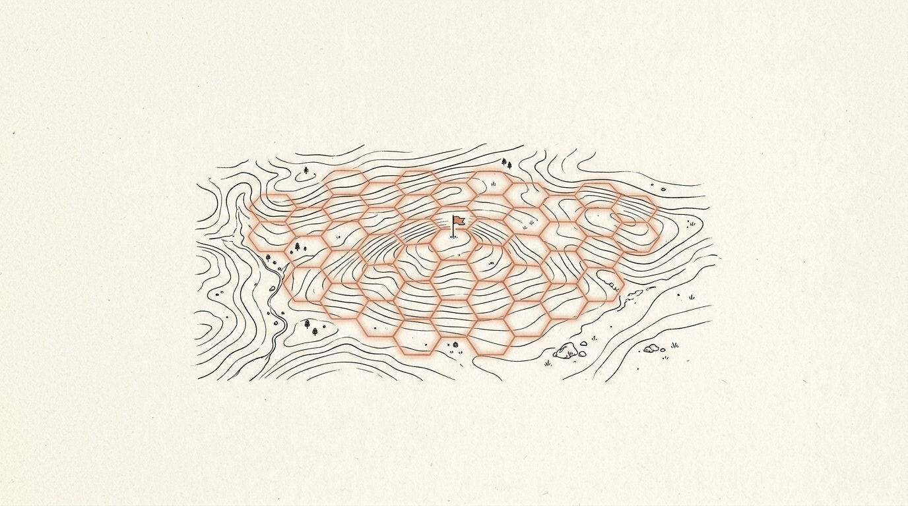
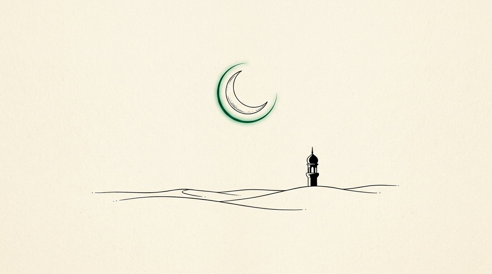
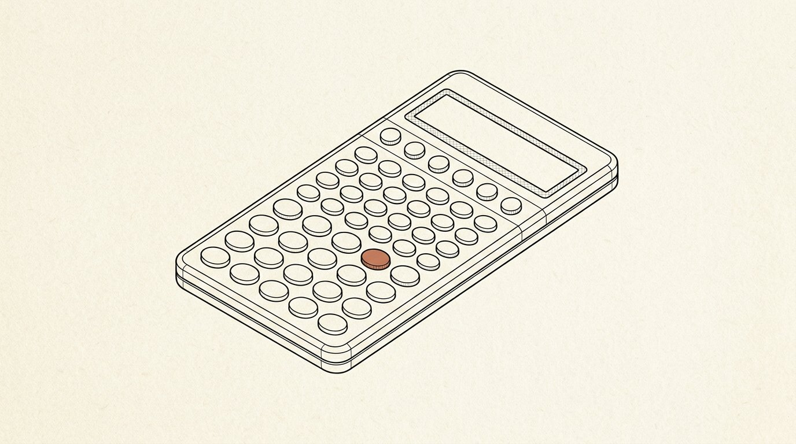
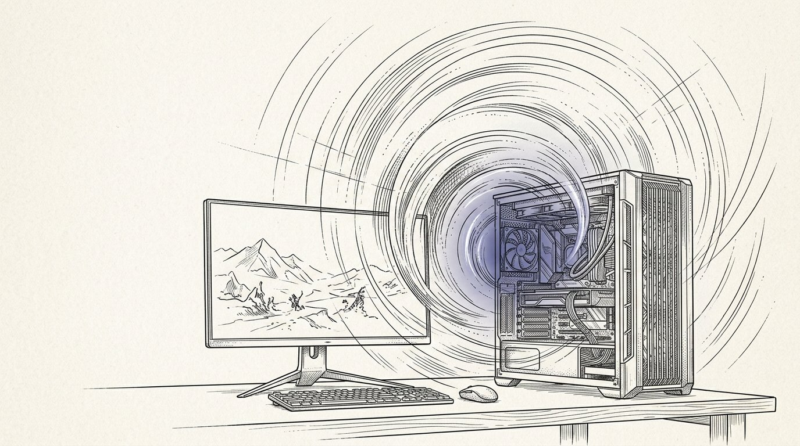
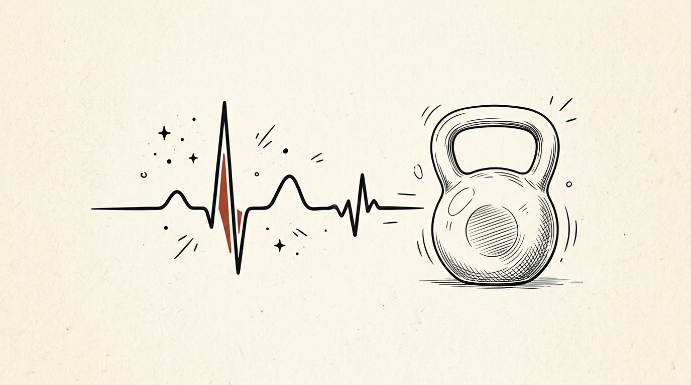
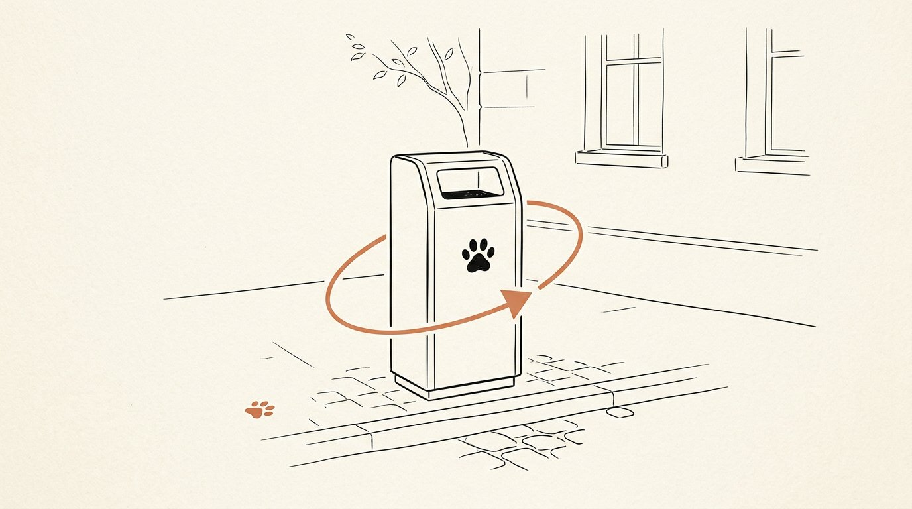

Craft over noise.
I’m Nemat Ullah — an independent developer building web products, offline-first Android apps, and small worlds to play in. From first sketch to shipped detail, one obsession: it should feel obvious in your hands.
- Public repositories
- 22
- Live products shipped
- 7
- Commits & counting
- 126
- Building in public since
- Apr ’25
01/ Selected work
Shipped things,
not slides.
Six pieces that show the range — a final-year moonshot, two shipped Android apps, and production sites people actually visit.
-
01
TerraStep
GPS territory-control MMO on a zero-budget stack — build plan, verified Postgres claim engine & playable Dart prototype. Final-year project.

-
02
Noor Salah
Offline prayer-times & adhan reminder Android app — emerald/gold design, home-screen widget, Makkah reminders, Hijri (Pakistani) calendar. 100% on-device.

-
03
Scientific Calculator Pro
Six-mode scientific calculator for Android — a React 19 single-file web app running inside a native WebView shell, built in days and polished for real hands.

-
04
Vortex LabsArena-Pc
High-performance PC builder & e-commerce experience for an enthusiast hardware brand — typed end-to-end, fast, and dramatic.

-
05
Town Fitness Point
Website for a neighbourhood fitness club — training goals, conditioning programs, and membership conversion, designed for walk-in phones.

-
06
PawBin
Concept for smart street pet-waste bins — a civic-design landing page making an unsexy problem feel inevitable and obvious.

02/ Open source & experiments
Small bets,
public ledgers.
Side quests and works-in-progress — kept public on purpose.
yt-extension
A Svelte browser extension for YouTube — scratching my own itch, in public, with real pull requests.
github.com/Nemat-commits/yt-extension →TerraStep Agents
The multi-agent brain behind TerraStep — autonomous agents coordinating city-scale territory play.
github.com/Nemat-commits/FYP---TerraStep →Typing Game
A fast, opinionated typing trainer — because muscle memory is a feature, not a bonus.
github.com/Nemat-commits/Typing-game →Seerat-E-Nabawi
A Flutter companion for reading the Seerah — quiet technology for a loud world.
github.com/Nemat-commits/Seerat-E-Nabawi →IndexSoL v2
Iteration two of IndexSoL — a shipping discipline: version it, learn it, ship it again.
indexsol.vercel.app →Meraas
Python groundwork for the next thing — curiosity, expressed as a repository.
github.com/Nemat-commits/Meraas →03/ About
A little logic,
a lot of intent.
Hey — I’m Nemat. I’m a developer from the hills of Abbottabad, Pakistan, and I like taking things from a rough first sketch all the way to the satisfying final detail.
My craft sits between React & Next.js frontends, Node backends, and cross-platform Android with Capacitor and Flutter. Lately I’ve been deep in game feel — physics, shaders, and why a jump either feels great or doesn’t — with TerraStep, my final-year GPS territory-control MMO.
Different screens, different constraints — same standard: make the thing feel obvious once it’s in your hands. I’d rather ship one thing I’m proud of than ten I’m not.
- I.
Obvious beats clever
If the user needs a manual, the design failed. Simple is the hardest setting.
- II.
Details are the product
The empty states, the offline mode, the 300 ms of latency — that’s where quality lives.
- III.
Ship, then sharpen
A live rough thing teaches more than a perfect invisible one. Iterate in public.
04/ Contact
Let’s make
something worth making.
Have a product to build, an app to ship, or a game that exists only in your head? Tell me about it — I read everything, and I reply to almost everything.